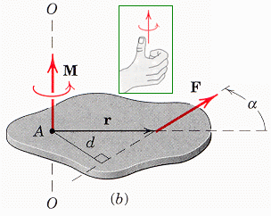
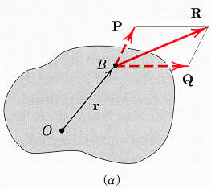
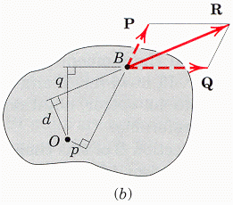
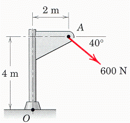

Le produit vectoriel est un outil pratique pour calculer les moments.

Le moment M positif de la force F passant par le point A et ayant comme nomeM = F d (éq. 2/5)
est
M = r × F (éq. 2/6),
où r est un vecteur qui a comme origine
le point de rotation A et
l'autre extrémité en un point
quelconque sur la ligne d'action de la
force F.
Constater que
M = Fr sin α = F d (éq.2/7),
Ce qui est en accord avec l'équation 2/5. Il faut respecter
l'ordre des vecteurs dans l'équation 2/6, car F × r
produirait un vecteur dans le sens opposé.
Selon Meriam, la démarche à privilégier pour le calcul d'un moment dépend habituellement de la géométrie.
Lorsque la distance perpendiculaire d entre le centre du moment A et la ligne d'action de la force F peut se déduire facilement, il vaut mieux privilégier la démarche scalaire.
Lorsque r et F ne sont pas perpendiculaires et qu'il est facile de les exprimer, il vaut mieux privilégier la démarche vectorielle. Meriam utilise souvent la démarche vectorielle dans les cas tridimensionnels. Il est donc souhaitable d'être familier avec la démarche vectorielle.
Dans le cours Ing250, le calcul du moment fournit un cadre contextuel permettant la révision du produit vectoriel étudié au Cégep. Voir les problèmes typiques du microTest.
Varignon stipule que le moment d'une force par rapport à un point de rotation quelconque est égal à la somme des moments des composantes de cette force par rapport à ce point.

Considérer la force R qui agit dans le plan de la figure(a) ci-contre. Les forces P et Q représentent deux composantes obliques de R.On peut généraliser à plus de deux composantes.

Démarche scalaire:Alternative. Si les vecteurs P et Q sont données et que d et p peuvent être obtenus aisément, l'alternative
scalaire est de calculer le moment tel qu'illustré à la figure ci-contre.
La norme du moment de R par rapport à O est
MO = R d = -pP + qQ
Démarche vectorielle:
Sinon, la démarche vectorielle est privilégiée.
Il faut alors calculer les vecteurs r et
R de la figure(a), puis en faire le produit vectoriel pour obtenir le moment.
La norme du moment de R par rapport à O
est MO = || r × R || = norm(cross(r,R))
(Sample Problems, Meriam, excercie 2/5, p.41)

Pour le problème de la figure ci-contre, calculer la norme du moment MO de la force de F=600 N par rapport au point O. Utiliser les différentes approches suivantes:- Quatre (4) démarches scalaires:
o MO donnée par MO = Fd où d est le bras de levier perpendiculaire à la force appliquée au point A
o MO donnée en utilisant le théorème de Varignon avec Fx et Fy
o
MO
donnée en utilisant le théorème de Varignon avec seulement Fy
o MO donnée en utilisant le théorème de Varignon avec seulement Fx
-
La démarche vectorielle
Solution : ExSP2_5.m